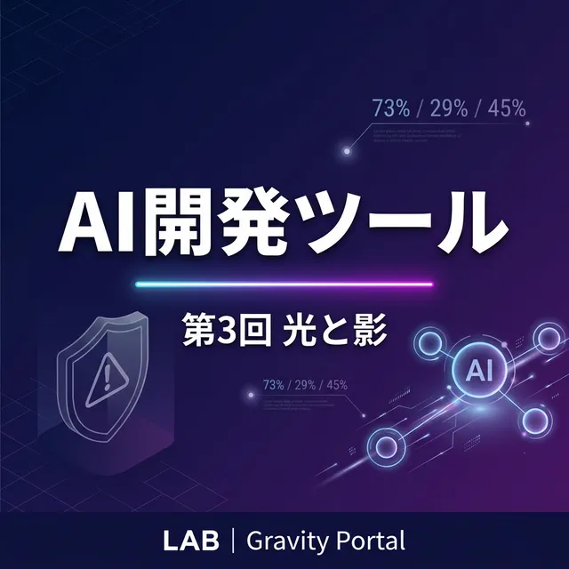

📊 AI開発ツール最新動向 — LAB第3回レポート：光と影

はじめに — 昨日の記事がもう「古い」
LAB第2回を公開したのは昨日（3月11日）です。たった24時間後、もうこれだけのことが起きました。
GPT-5.4がPCを直接操作し始め、CursorのAIは24時間休まずコードを書き、Claude Codeは障害を乗り越えてHTTP Hooksを投入。そしてAI生成コードの45%に脆弱性があることが数値化されました。
「光」だけでなく「影」にも正面から向き合った第3回をお届けします。
📊 衝撃の数字 — 73%使うが、29%しか信頼しない
今回のリサーチで最も衝撃的だったのが、業界全体の矛盾を示す数字です。
- 73%のエンジニアリングチームがAIコーディングツールを毎日使用
- 29%しかAI生成コードを信頼していない
- 66%が「ほぼ正解だが微妙に違う」と感じている
- 45%のAI生成コードに脆弱性の可能性（Veracode 2025調査）
- 69%の頻繁利用者でデプロイ問題が増加
「使わないと遅れる、使うと壊れる」——この矛盾こそが2026年3月の現実です。
🔥 GPT-5.4 — AIがPCを操作する時代
OpenAIが3月5日にリリースしたGPT-5.4は、ネイティブPC操作に対応した初の汎用モデルです。マウスクリック、キーボード入力、スクリーンショット認識をPlaywrightと連携して自律実行。100万トークンコンテキストで大規模コードベース全体を一度に把握できます。
GitHub Copilotに即日統合され、Jiraチケットから直接PRを作成するワークフローが可能になりました。ただし「間違ったボタンをクリック」する事例も報告されており、まだ完全ではありません。
⚡ Cursor Automations — 24時間眠らないAI
Cursorが投入したAutomationsは、「AIエージェントが常時オンで自律稼働する」というパラダイムシフト。Slack、GitHub PR、PagerDutyアラートなどのイベントトリガーで自動起動し、セキュリティレビューやインシデント対応を人間の操作なしで実行します。
ただし注意点も。「常時オン」は「常時課金」の意味であり、Cursor Pro ($20/月) でも実質$60-80/月に達するユーザーが続出。$200のUltraプランですらレート制限にかかるとの報告もあります。
😤 開発者の本音 — 各ツールの不満と課題
今回はX（Twitter）、Reddit、開発者フォーラムから積極的にユーザーの声を収集しました。主な不満をまとめます：
- Antigravity — Pro版に突然「週間制限」が導入。5時間リフレッシュ→週間キャップに変更され、数日間ロックアウトされるユーザーが続出。「Pro版なのにFree版と変わらない」との声
- Claude Code — 3月に障害連発（3/2, 3/3, 3/11）。「most loved 46%」の支持を得ながらも信頼性リスクが急浮上。Code Reviewは1PRあたり$15-25と高額
- Cursor — クレジット制への移行で「community backlash」が継続中。CVE-2025-54135/54136でセキュリティ脆弱性も発覚
- GitHub Copilot — 市場シェア42%なのに「most loved」はわずか9%。「使われているが、好かれていない」の典型。Premium Request超過課金に混乱
- Windsurf — Cognition買収後、将来の方向性が不透明。ユーザーの離脱が増加中
👤 OSSコーディングエージェントの進化
オープンソース勢も急成長中です：
- OpenHands ⭐68,500 — SWE-Bench 50%突破。GitHub issue自動修正の最高峰
- Cline ⭐58,600 — BYOKモデルで透明な料金。Plan and Actの安全設計が支持
- Roo Code ⭐22,500 — 5モード分離（Architect/Code/Ask/Debug/Orchestrator）で急成長
ただしOSSにも課題が。APIキー管理の煩雑さ、セットアップ障壁の高さ、BYOKゆえの予想外のAPI費用などが指摘されています。
🛡️ Vibe Codingの影 — 実際に起きた事件
「AIに任せてコードを書く」Vibe Codingの裏側で、深刻な事件が発生しています：
- MoltbookソーシャルネットワークでAPIキー150万件流出 — AI生成コードがAPIキーをフロントエンドにハードコード
- Lovableプラットフォームでユーザーデータ漏洩 — AI生成の認証コードに脆弱性
- Java生成コードの70%以上がセキュリティ失格（Veracode調査）
- ロジック・正確性エラーが人間の1.75倍（CodeRabbit分析）
対策として「認証・決済・アクセス制御はVibe Codingで書かない」ことが業界の共通認識になりつつあります。
🔗 LAB第3回 各ページへのリンク
それぞれの詳細は以下のページでご覧いただけます：
- 🛠️ AI開発ツール比較 第3回 — 5大ツールの光と影、ユーザーの不満を徹底取材
- 👤 AI開発者ピックアップ 第3回 — OSSランキング、Cline vs Roo Code比較
- 📊 AI開発トレンド 第3回 — GPT-5.4、Automations、Vibe Codingの影
まとめ
第2回からたった1日。それなのに、GPT-5.4はPCを操作し始め、Cursorは24時間自律稼働AIを投入し、AI生成コードの45%に脆弱性があると数値化されました。
「73%が使うのに29%しか信頼しない」——この矛盾の中で、私たち開発者はAIと共に進化し続けるしかありません。
LABセクションでは今後も定期的に調査・更新を行っていきます。次回もお楽しみに。